Русскоязычный музыкальный канал возвращается
В 2010 году для русскоязычной музыки запустили отдельный канал — RUSONG TV. Project Restored — фанатский проект, который возвращает его стиль и атмосферу.
Русскоязычный музыкальный канал возвращается. Следите за новостями в Telegram.

Сестринский проект: архивные записи, классические клипы и новая музыка в духе оригинального канала.